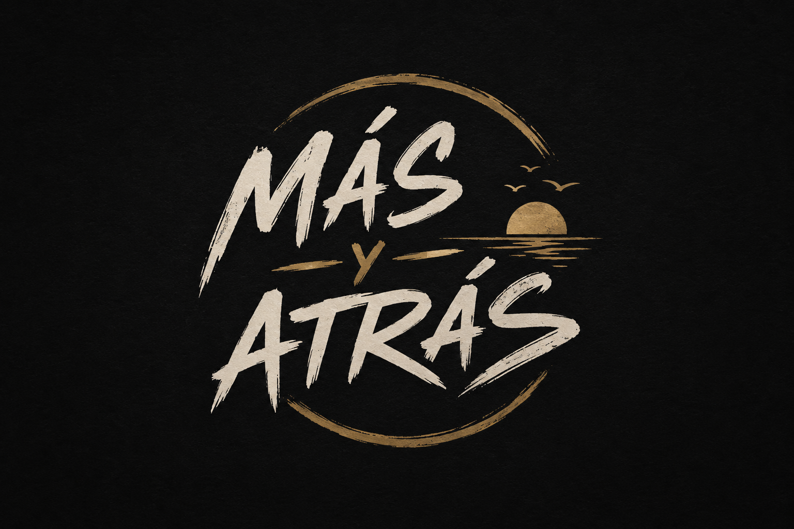
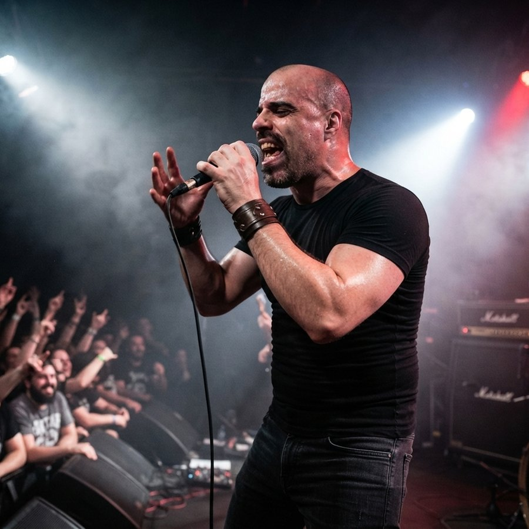

Rock en vivo — dúo
MÁS
MÁS
y atrás
Como la marea: cada show es ida, cada canción es vuelta.
Desliza

Más y AtrásComo la marea: cada show es ida, cada canción es vuelta.

Todo empezó hace ocho años, en 2018. Santiago Silberstein y Germán Farías se conocieron en el Club GEBA, pero no tocando la guitarra: él trabajaba como instructor de musculación y Santiago como guardavidas. Entre turno y turno, en esos ratos muertos que deja un club de día completo, empezó una charla que terminó siendo mucho más que la típica cortesía entre compañeros de trabajo — descubrieron que a los dos les gustaba la música, y de ahí a juntarse con las guitarras hubo un solo paso.
Al principio no había plan ni nombre: se juntaban simplemente a tocar covers, dos guitarras y un cancionero prestado, sin pensar todavía en formar una banda. Pero la costumbre de encontrarse a tocar fue abriendo la puerta a algo propio, y en algún momento los covers empezaron a quedarse cortos. Entre ensayo y ensayo aparecieron las primeras canciones que eran solo de ellos.
Ensayaron donde pudieron. Primero en una casa, después en una sala de ensayo compartida con otros colaboradores que fueron sumándose y restándose con los años. Hubo una época en la que ni siquiera eso alcanzaba: los vecinos se quejaban del volumen a cualquier hora, y la solución de emergencia terminó siendo meterse a practicar adentro de un baño — el único rincón con paredes lo bastante gruesas como para amortiguar un poco el ruido. De cada uno de esos lugares quedó algo: una canción, un arreglo, una anécdota para contar arriba del escenario.
"No importa si es enchufado o acústico: la esencia es la misma. Sólo cambia el camino."
Esa frase — misma esencia, distinto camino — es la que persiguieron en Musilencio (Acústico), la contracara íntima de Ruido Interior (En Vivo), grabado con el público al frente y la sangre caliente. Ocho años después de aquel primer cruce en el Club GEBA, Santiago y Germán siguen siendo los mismos dos de siempre, ahora con discos propios y un nombre que resume todo lo que aprendieron en el camino: se avanza, se vuelve, y siempre se sigue tocando.


✎ ¿Qué inspiró "Te Necesito"? Contame de qué habla, cuándo la escribieron y qué la hace especial en vivo.
✎ ¿De dónde sale el nombre "Kernel"? Cuál es la historia detrás de esta canción.
✎ ¿Qué apuesta cuenta esta canción? Contame la inspiración detrás de la letra.

✎ ¿Qué historia hay detrás de "Infidelidad"? Contame la inspiración de esta letra.
✎ ¿Para quién es "Ella es para Mí"? Contame de dónde salió esta canción.
✎ ¿Qué recuerdo de mar inspiró esta canción? Contame la historia.

✎ ¿Qué inspiró "Máquina del Tiempo"? Contame la historia de esta canción.
✎ ¿Quién es la "Tierna de Ojos Tristes"? Contame de dónde salió esta canción.